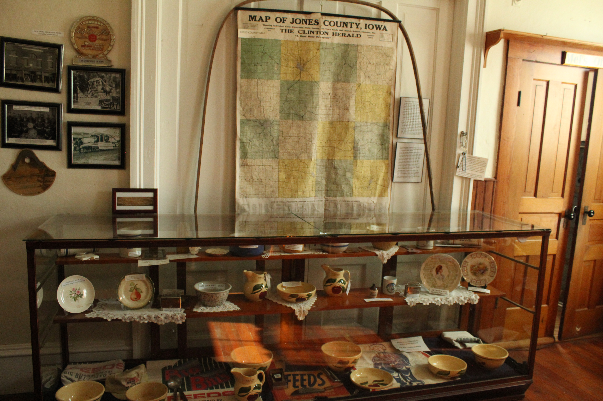
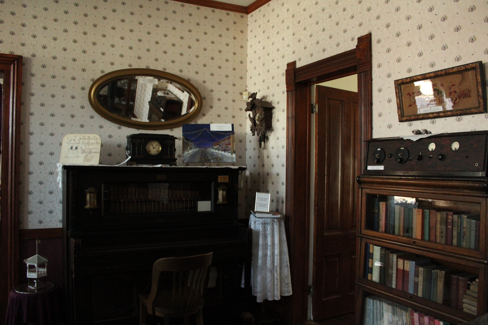
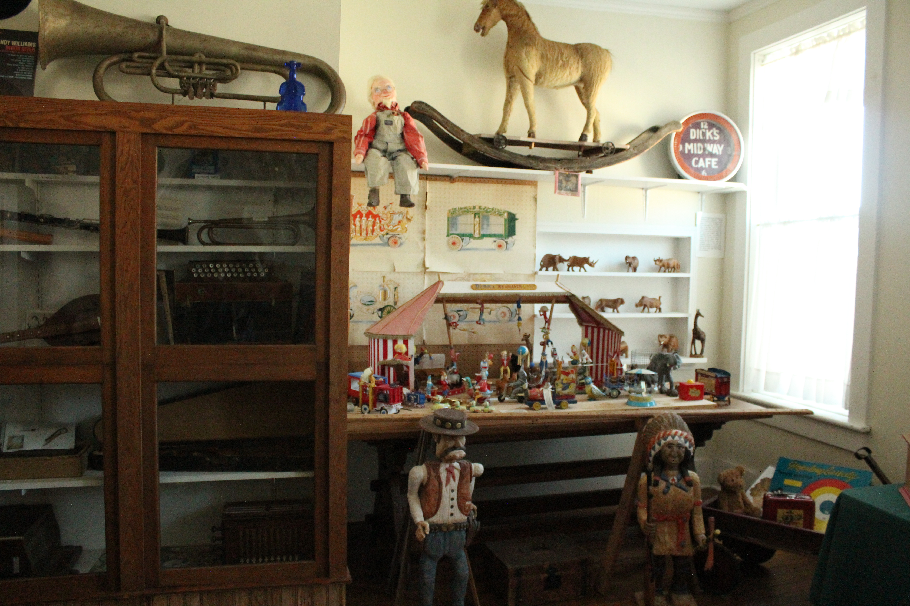
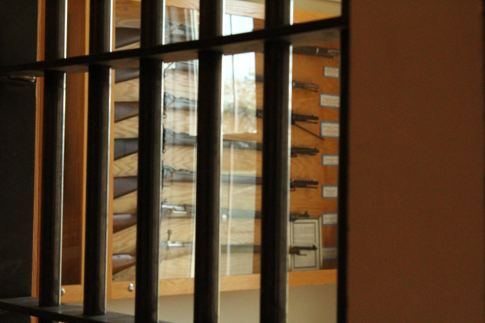
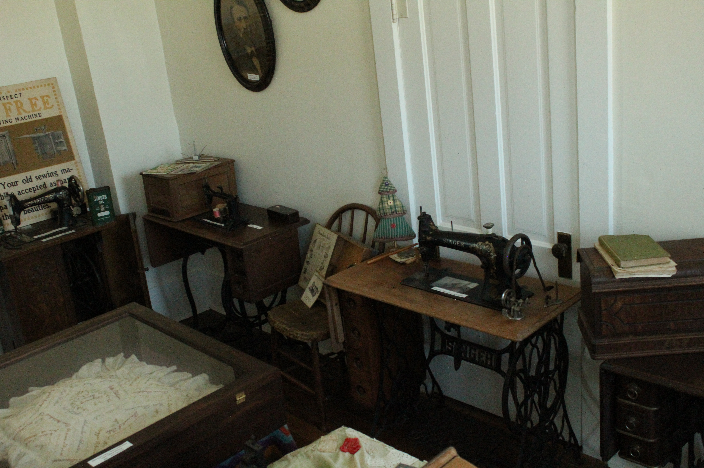
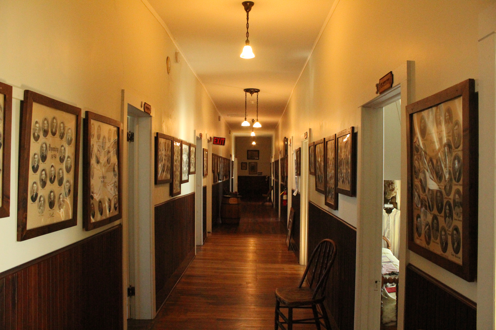
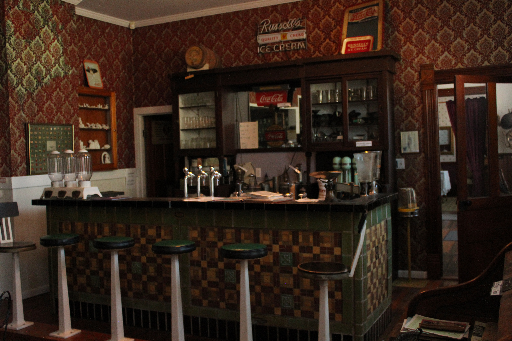

The Wyoming Historical Museum, located on the south side of Wyoming’s Main Street, is a popular tourist attraction in Eastern Jones County, Iowa. A devastating fire in July of 2013, nearly claimed the Williams Hotel building that was built in 1878, from Wyoming’s native brick. More than twenty rooms have been renovated and displays showing the history of the community have been created.


Visitors enter into the hotel lobby and continue to a charming parlor displaying a pump organ from 1872, a player piano from 1924, and other interesting artifacts. Of interest is the old fashion drugstore, complete with a soda fountain and an extensive display of pharmaceutical items, some dating back to Civil War times. Also, on the main floor are many other antiques as well as a library area that features maps, atlases, and genealogy research of about 125 families. The full basement under the hotel building contains agricultural displays of years gone by. There is farm machinery, veterinary and dairy equipment, as well as building and plumbing supplies dating back to the late 1800’s. Be sure to check out the chicken catcher.
Going upstairs, via the open staircase, tourists can visit fourteen rooms – each one created with a special theme. The rooms consist of an old fashion barbershop, dentist office, school room, hotel room, kitchen, clothing room, quilt room, and others. The sports room features the uniform, and other possessions, of Emil “Dutch” Levsen – a baseball player from Wyoming who pitched for the Cleveland Indians. In 1926, “Dutch” was the last person to pitch and win a double header in the Major Leagues.


The gun room has 24 muskets and rifles (1810-1898) that were used during Civil War times and in the Indian Wars of the West. One of the guns was used at the Battle of Bull Run. Another gun was used as a stage prop at Metro Golden Meyer Film Studios. These guns, along with a written history on each, were given to the town of Wyoming by Ross Stickley, a former resident. Mr. Stickley also donated many books about these firearms. The gun room window has been reinforced with the jail cell door from the town of Center Junction, and a replica of the cell door is used as the entry to this very interesting room.
The ladies will enjoy the room of vintage household equipment, as well as the sewing room boasting a collection of over 30 sewing machines. The arts and entertainment room, featuring a hand carved circus, will interest the children. They will also enjoy seeing the large collection of arrowheads. The men could spend hours in the tool room that contains nearly 200 woodworking planes, tools, and other items.


Another popular attraction is the 80 foot hallway where class composites of the Wyoming graduating classes are displayed. Nearly fifty pictures dating back to the late 1800’s line the hallway walls. More class composites are located in the school room with other pictures, yearbooks, 4H books and school memorabilia. This area is a “treasure trove” for those doing genealogical and family research.
Returning to the main floor, a guide will take visitors next door to the Post Office Annex. Here there are postal displays and ledgers dating back to the late 1800’s. The annex building also has military information, artifacts, and uniforms. Wyoming, Iowa was well represented in the Civil War as well as both World Wars and later conflicts. Also featured in the annex is a huge display from the Crescent Printing Company that was a Wyoming business for nearly 100 years. Visitors can view the large printing presses and equipment, as well as old business machines. Railroad “buffs” will find interesting pictures of the depot and information on the railroad that was once an important part of Wyoming.

There is no charge for the tour, but donations are gratefully accepted. We will open for an individual or group upon request. Call one of the people on the contact list, and a time will be arranged for you.